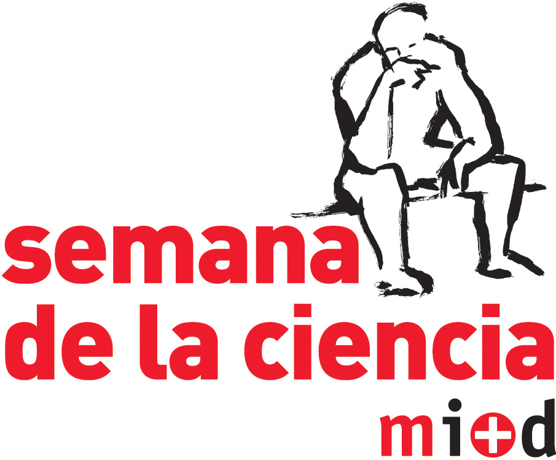
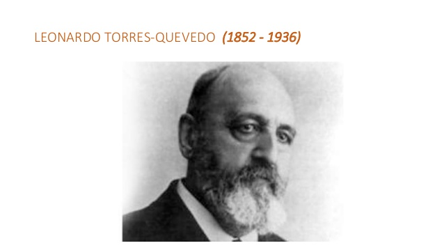
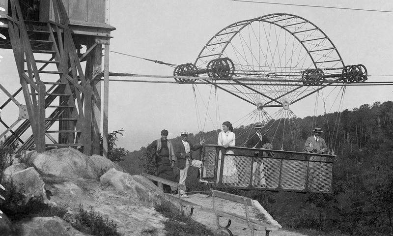
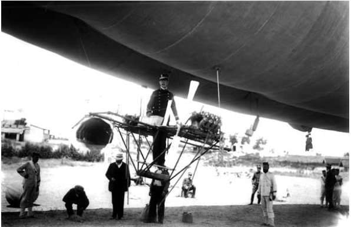
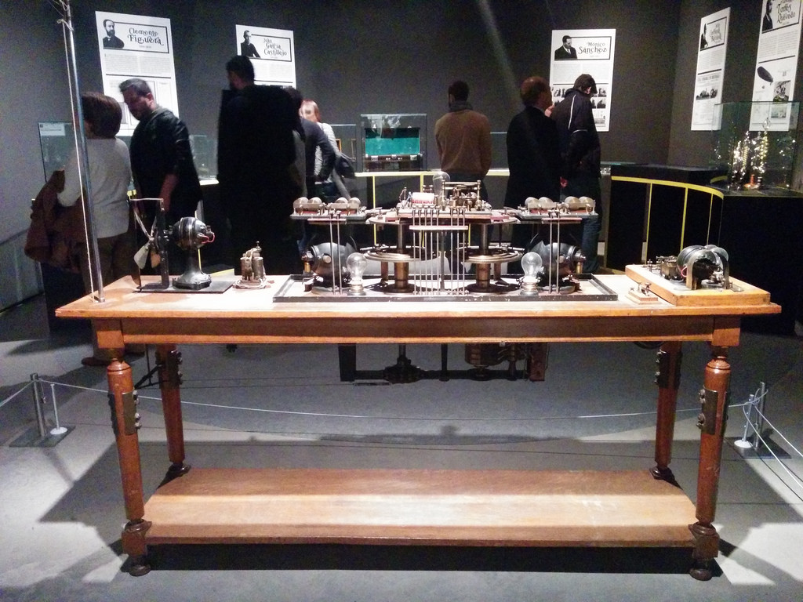
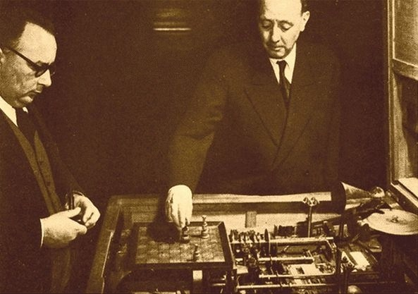
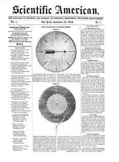

DISPARA TU CREATIVIDAD Y SÉ TU TAMBIÉN UN INVENTOR
Álvaro Montero y Mónica Sánchez

La figura de Torres Quevedo

“El más prodigioso inventor de su tiempo” Maurice D’Ocagne (Presidente de la Sociedad Matemática Francesa) (1862 - 1938)
Inventos de Torres Quevedo
La patente del transbordador, un funicular
aéreo suspendido, cuya tensión se mantiene siempre constante, independientemente de la carga que soporten o de la posición que ocupe a lo largo del recorrido.

Inventos de Torres Quevedo
Dirigible, el inventor español revoluciona el panorama aeronáutico en 1902 con la patente "Perfectionnements aux aérostats dirigeables", en la que pre- senta un nuevo tipo de dirigible que recogería las ventajas de los sistemas precedentes, eliminando todos sus inconvenientes.

Inventos de Torres Quevedo
Telekino, el primer
dispositivo de mando a distancia de la historia.

Inventos de Torres Quevedo
El ajedrecista, construido en 1912. La máquina causó sensación en la Feria de París de 1914 y obtuvo una mención en la prestigiosa revisa Scientific American
